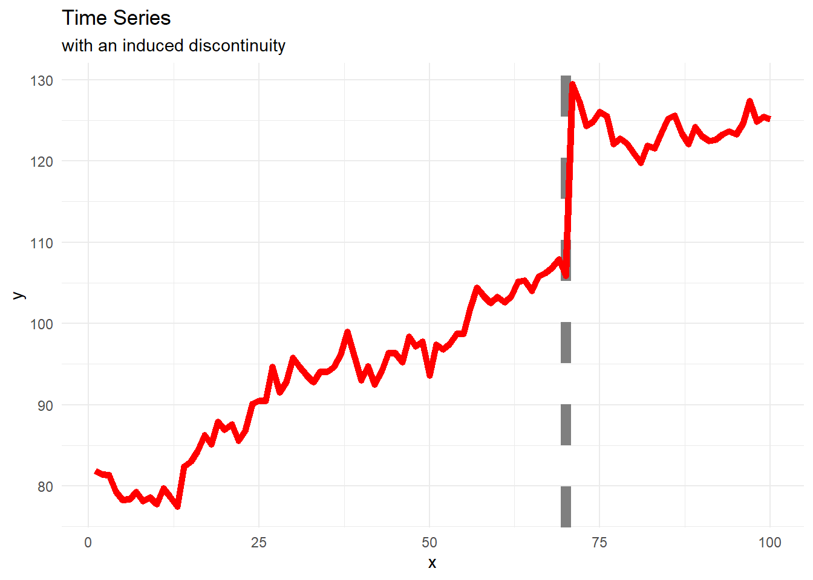
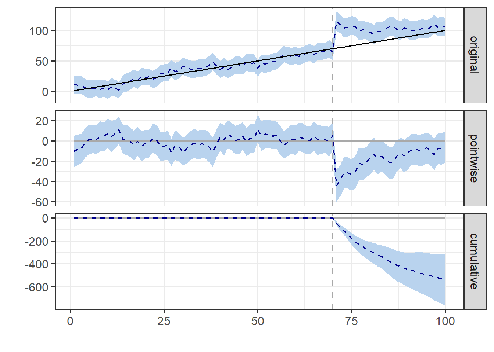
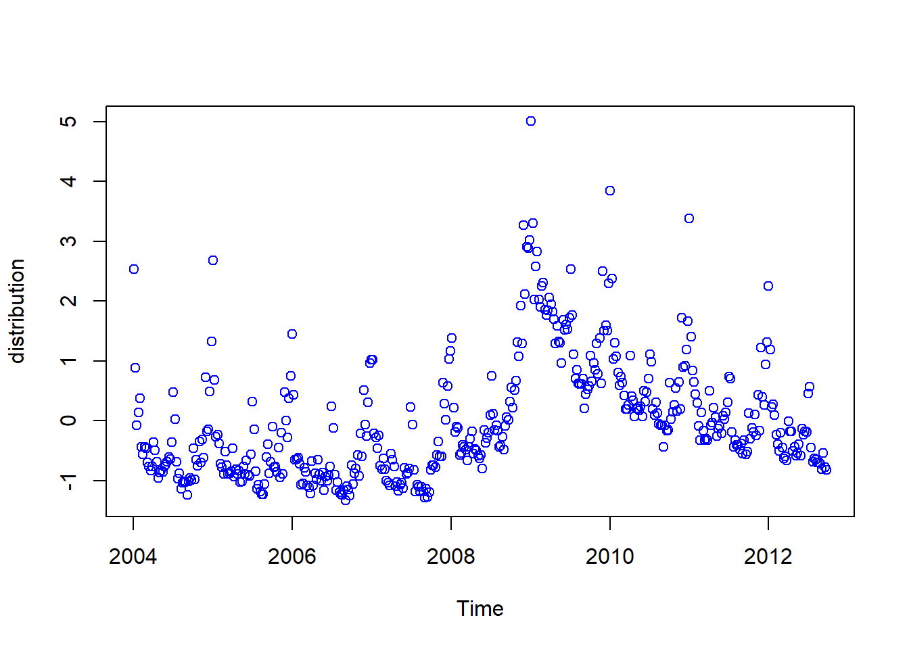
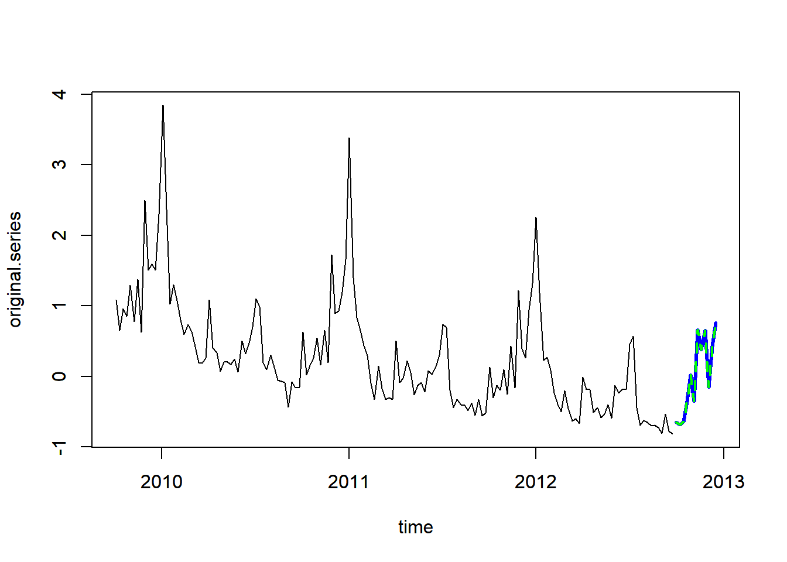

library("CausalImpact")
library("tidyverse")Over the next few weeks, I want to learn more about Bayesian Neural Networks. Here in this blog post, I will gather resources and examples.
Causal Impact
I have seen several people mention (on Twitter or Slack) the CausalImpact package. Here, I roughly follow the vignette.
Toy Data
set.seed(320)
# create time series and apply vertical shift
ts_raw <- 100 + arima.sim(model = list(ar = 0.999), n = 100)
# add "noise"
y <- 1.2*ts_raw + rnorm(100)
# intentionlly "break" time series and lift a part
y[71:100] <- y[71:100] + 25
x <- 1:100
df <- data.frame(x,y)df |>
ggplot(aes(x,y)) +
geom_vline(xintercept = 70, color = "gray50",
linetype = 2, linewidth = 3) +
geom_line(color = "red", linewidth = 2) +
labs(title = "Time Series",
subtitle = "with an induced discontinuity") +
theme_minimal()
Bayesian Analysis
training over pre-intervention period
testing over post-intervention period
the
CausalImpactfunction- assembles structural time-series model
- performs posterior inference
- computes estimates for casual effect
pre_intervention <- c(1,70)
post_intervention <- c(71, 100)
ts_impact <- CausalImpact::CausalImpact(df,
pre_intervention,
post_intervention)Model Statistics
summary(ts_impact)Posterior inference {CausalImpact}
Average Cumulative
Actual 86 2565
Prediction (s.d.) 103 (3.8) 3100 (115.3)
95% CI [96, 111] [2882, 3326]
Absolute effect (s.d.) -18 (3.8) -535 (115.3)
95% CI [-25, -11] [-761, -317]
Relative effect (s.d.) -17% (3.1%) -17% (3.1%)
95% CI [-23%, -11%] [-23%, -11%]
Posterior tail-area probability p: 0.00106
Posterior prob. of a causal effect: 99.89418%
For more details, type: summary(impact, "report")Visualization
The plot of an “impact” object returns a ggplot object!
plot(ts_impact)
bsts
Bayesian structural time series
- looking at the first example on this blog post
library("bsts")
data(iclaims) #unemployment dataTrend and Seasonal Components
state_specs <-
bsts::AddSemilocalLinearTrend(list(),
initial.claims$iclaimsNSA)
state_specs <- bsts::AddSeasonal(state_specs,
initial.claims$iclaimsNSA,
nseasons = 52)Model
model_1 <- bsts::bsts(initial.claims$iclaimsNSA,
state.specification = state_specs,
niter = 100)=-=-=-=-= Iteration 0 Tue Mar 19 23:21:31 2024
=-=-=-=-=
=-=-=-=-= Iteration 10 Tue Mar 19 23:21:31 2024
=-=-=-=-=
=-=-=-=-= Iteration 20 Tue Mar 19 23:21:31 2024
=-=-=-=-=
=-=-=-=-= Iteration 30 Tue Mar 19 23:21:32 2024
=-=-=-=-=
=-=-=-=-= Iteration 40 Tue Mar 19 23:21:32 2024
=-=-=-=-=
=-=-=-=-= Iteration 50 Tue Mar 19 23:21:32 2024
=-=-=-=-=
=-=-=-=-= Iteration 60 Tue Mar 19 23:21:32 2024
=-=-=-=-=
=-=-=-=-= Iteration 70 Tue Mar 19 23:21:33 2024
=-=-=-=-=
=-=-=-=-= Iteration 80 Tue Mar 19 23:21:33 2024
=-=-=-=-=
=-=-=-=-= Iteration 90 Tue Mar 19 23:21:33 2024
=-=-=-=-=Visualization
plot(model_1)
Prediction
- predict next 12 time points
- along last 156 time points (3 years)
pred_3y <- predict(model_1, horizon = 12)
plot(pred_3y, plot.original = 156)
Online Videos
- Bayesian Neural Network by TwinEd Productions (7 minute video)